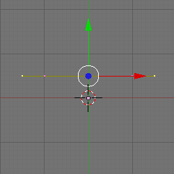
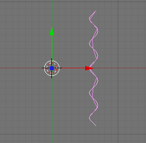
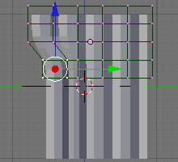

« 上一章 |
首页
| 下一章 »
14.软体窗帘（Softbody Curtains）
这个教程展示了如何创建窗帘。它使用这些特征：
- NURB Curves
- 柔体
- 动画
- 加权的顶点
- 点阵
- IPOs
- Empties和Wind
窗帘
- 按下CTRL-x，然后Enter打开一个新的场景
- 按下Del，然后Enter来删除3D立方体
- 按下NUM1切换到前视图
- 按下SPACE打开目录
- Add>Mesh>Plane
- 按下w打开目录
- 点击Subdivide Multi
- 改变2到12
- 点击OK
- 按下Tab切换到对象模式
- 按下NUM7到顶视图
- 按下SPACE打开目录
- Add>Curve>NURBS Curve
- 按下s、y、0来对齐顶点
- 按下a来取消选择顶点
选择外部的顶点点击SHIFT-RMB

按下Del，然后Enter来删除它们
按下a来选择剩下的两个顶点
按下w，然后Enter来细分顶点
重复三次
按下a来取消选择顶点
在对顶点按SHIFT-RMB，跳过每第三个顶点

按下g、y、.2来移动它们，来创建一个波浪
按下Tab到对象模式
按下z切换到线框模式
按下r、x、90，然后Enter来旋转曲线
在平面上按下SHIFT-RMB，然后在曲线上按下SHIFT-RMB

按下CTRL-p打开Parent目录
点击Curve Deform使平面curve-like

柔体
使窗帘看起来像不一样就使它成一个柔体。
- 按下z来绘制实体
- 按下NUM3切换到侧视图
- 按下RMB选择curtain
- 按下Tab来编辑curtain
- 在Vertex Groups下点击左手边的New按钮
- 点击Group来重命名它
- 给新的Vertex Group命名为Curtain
- 改变weight从1.000到0.000
点击Assign

按下F7两次到Soft Body选项卡
点击Soft Body

点击在Use Goal旁边的double-arrow的图标
选择Curtain
点击Stiff Quads
点击CEdge
改变E.Stiff为0.990

点击Soft Body Collision选项卡
点击Self Collision
点击Soft Body选项卡
动画
点击SR：2-Model，然后将它改为1-Animation
按下Tab
按下NUM3
按下z来绘制实体
多次按下+来缩放curtain
点击Play按钮（或View>Play Back Animation）
按下ESC来开始这个教程
按下“Skip to Start frame”按钮
你现在有了一个动画的柔体，但它什么都没做也无用。它下落是因为所有的顶点都是同等的。但是一些顶点比其它顶点更平等。
加权顶点
给顶点添加加权，来组织curtain由于重力下落。这个Goal使选择的顶点固定一点。这可以通过分配一个1.000加权来选择顶点。
- 按下NUM1
- 按下Tab
- 按下CTRL-Tab，然后3来改变顶点选择模式为面选择
- 按下a来取消选择面
选择下面所示的四个面：

按下F9打开编辑按钮
创建一个称为Rings的Vertex Group
改变Weight从0.000到1.000
点击Assign
按下NUM3
按下Tab
改变Object Mode为Weight Paint Mode

按下F7两次到Soft Body选项卡
改变Use Goal从Curtain到Rings
改变Weight Paint Mode为Object Mode
按下Play
按下ESC来停止观察像鱼一样拍动的curtain
Lattice
- 按下z来绘制线框模式
- 按下SPACE打开目录
- Add>Lattice
- 按下F9
- 改变U:7，V:2，W:5
- 按下r，y，90，然后Enter
- 按下g，x，.62，然后Enter来移动Lattice在curtain之上
- 按下NUM3
- 按下g，z，.62，然后Enter来向上移动Lattice
- 按下s，y，1.72，然后Enter
- 按下s，x，.25，然后Enter
按下g，y，.08，然后Enter

按下z来绘制对象
在curtain上点击RMB
点击Add Modifier
选择Lattice
改变Obje为Lattice

在lattice上点击RMB
按下Tab
选择一些顶点（使用b，LMB和拖拽）
按g，y，.2，然后Enter

Empties和Wind
- 按下Tab
- 按下NUM7
- 按下SPACE
- Add>Empty
- 按下r，y，90，然后Enter
- 按下NUM1
- 按下F7
- 改变Fields从None到Wind
- 改变Strength为0.5
- 保证你在Frame 1
- 按下i来插入IPO
- 选择LocRotScale来插入第一个位置（在frame 1）
- 改变到Frame 50
- 按下g，x，1.5，然后Enter来移动wind到右边
- 按下i，然后Enter来插入第二个位置（在frame 50）
- 按下NUM0
- 回到Frame 1
按Play

分辨率
通过加速CPU来使curtain看起来更真实
- 在curtain上点击RMB
- 点击Tab
- 按下a，然后再次按a来选择所有的顶点
- 按下w
- 选择Subdivide
- 按下F9
- 点击Set Smooth
和之前一样Play（在Frame 1处开始）